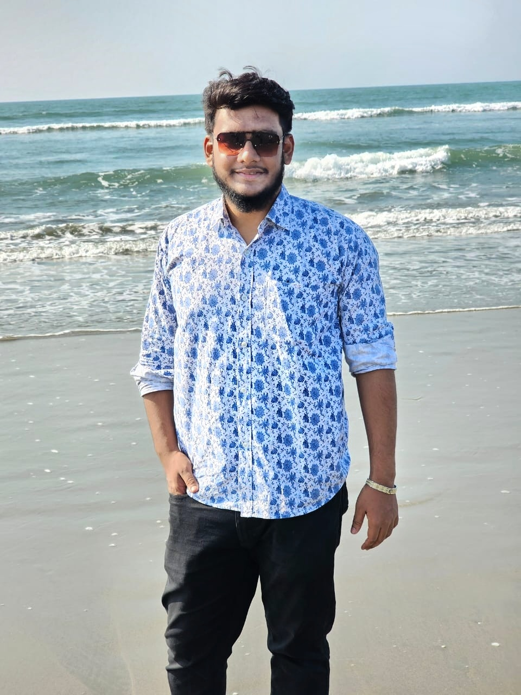
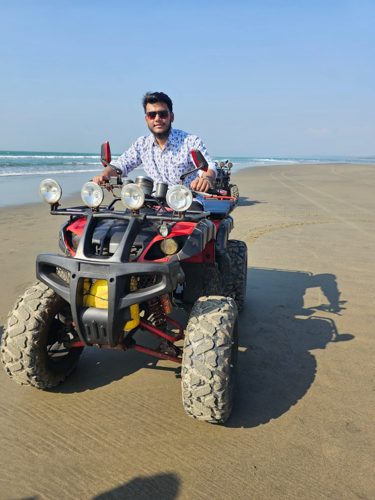

Cox's Bazar
The longest natural sea beach — waves, sunsets, and fresh seafood.

Why I Loved This Place
Cox's Bazar felt peaceful and energetic at the same time. Walking along the shore, watching the sunset, and trying local seafood made the trip unforgettable. I also enjoyed exploring nearby spots and taking photos in the golden-hour light.
Top 5 Things To Do
- Walk on the beach at sunrise or sunset (best photos).
- Visit Himchari Waterfall and the nearby hill view points.
- Explore Inani Beach for coral stones and calmer scenery.
- Try local seafood (grilled fish, fried shrimp, etc.).
- Shop at local markets for souvenirs and snacks.
Quick Travel Info
| Best Season | November to February (cool and pleasant) |
|---|---|
| Budget | Mid-range (hotel cost varies a lot by season) |
| Transport | Bus / Air to Cox's Bazar; local rickshaw/CNG for moving around |
| Food | Seafood, Burmese-inspired snacks, coconut drinks |
Photo Moments

All photos are from my own trip.